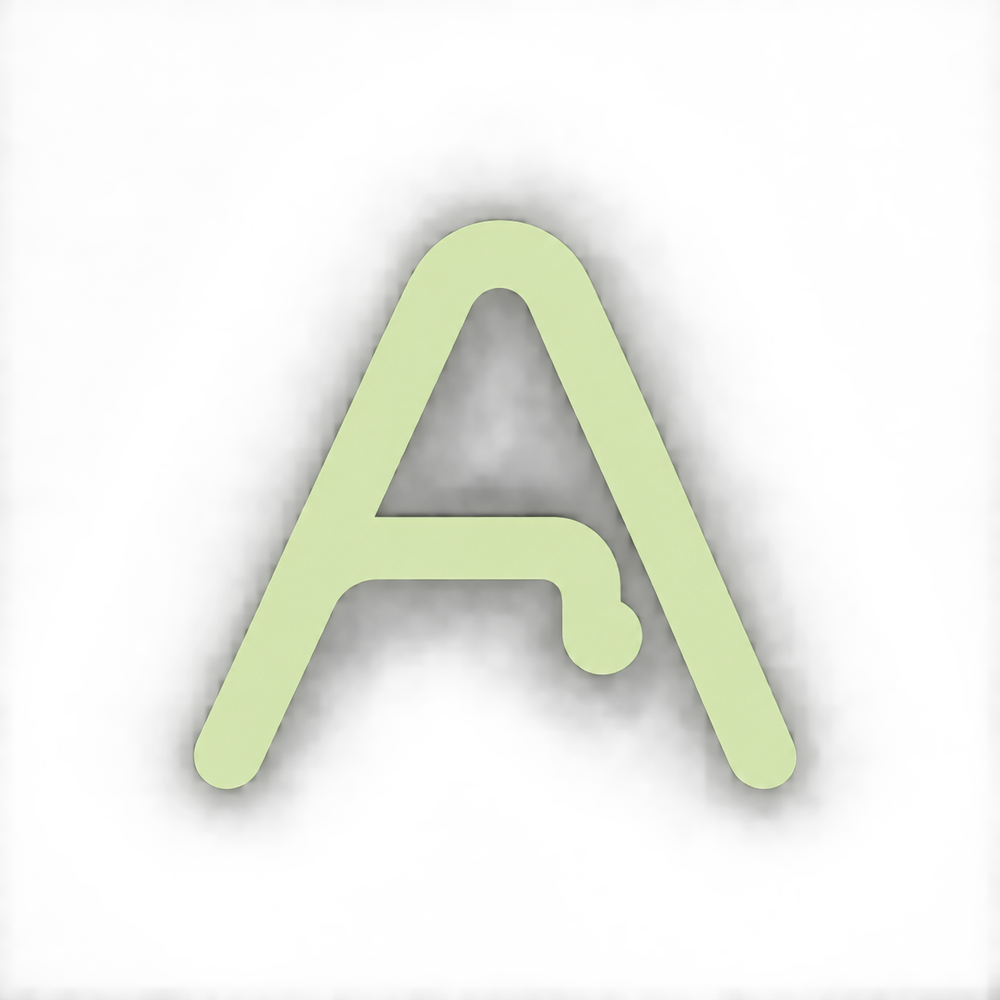
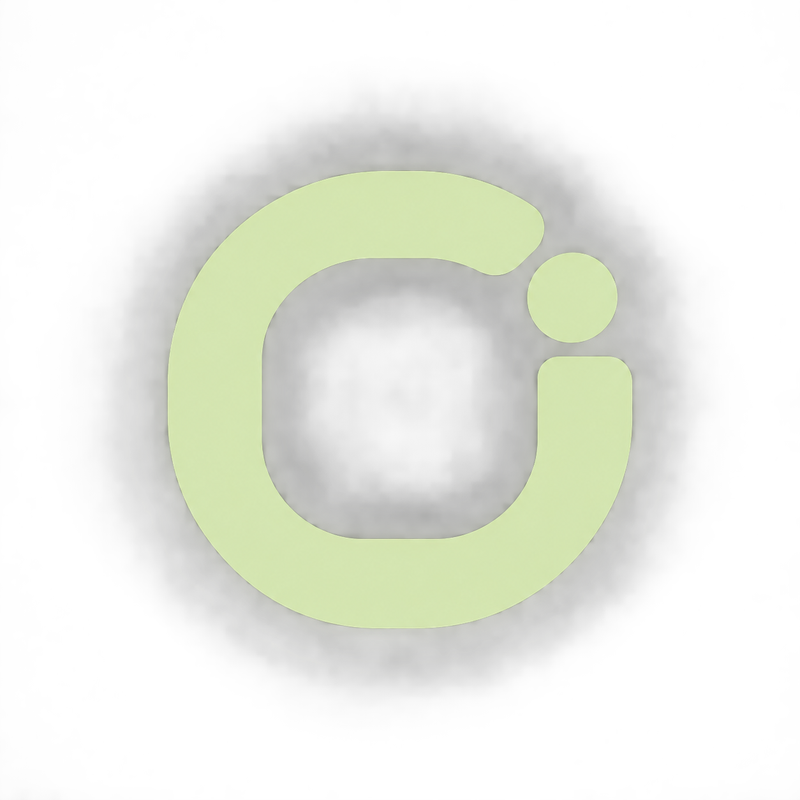
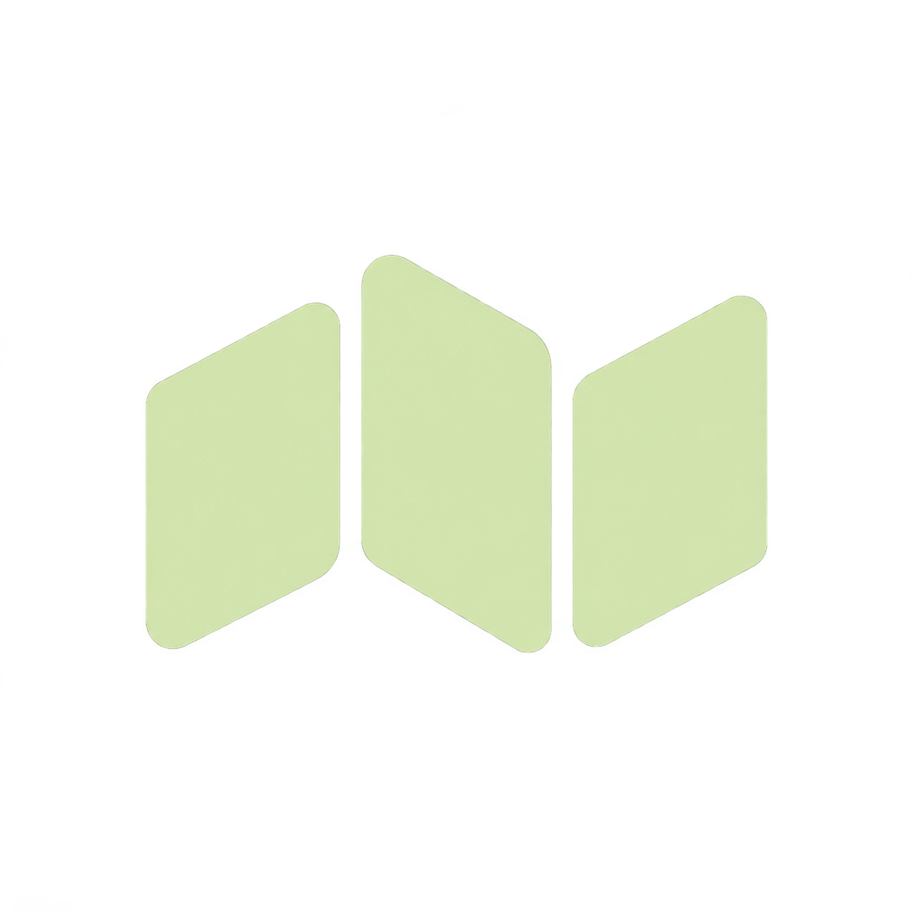
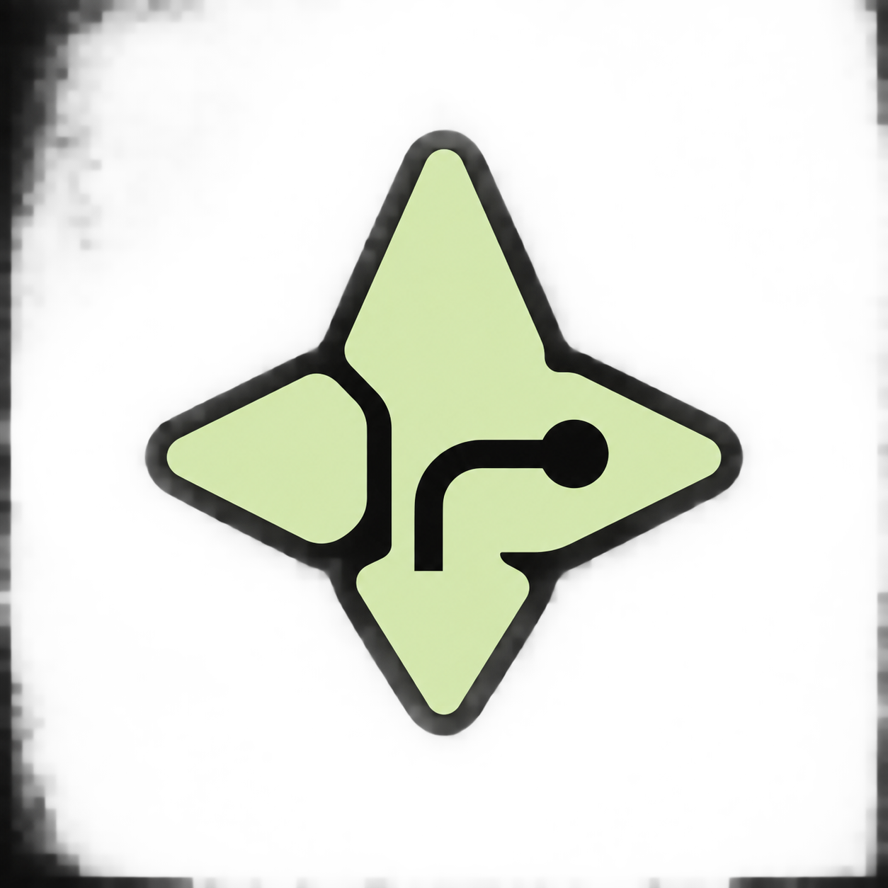

검정과 피스타치오를 유지한 새로운 심벌 시안입니다.큰 형태와 24·32px 크기를 함께 비교해 보세요.

AIRO의 첫 글자에길과 목적지를 연결한 모노그램.

하나의 루프와 목적지 점.단순하고 안정적인 앱 심벌.

세 면의 간결한 리듬.여행 서비스라는 인상이 직관적.

나침반 속에 새긴 경로.탐색과 방향성을 강조한 형태.
두 존재가 이어지는 곡선.AI 여행 동행의 친근한 인상.
웨이포인트 O는 작은 크기에서도 외곽 형태와 목적지 점이 잘 구분되어 앱 아이콘으로 가장 균형이 좋습니다.AIRO라는 이름과의 연결을 더 강하게 드러내려면 01번 열린 경로 A가 좋습니다.